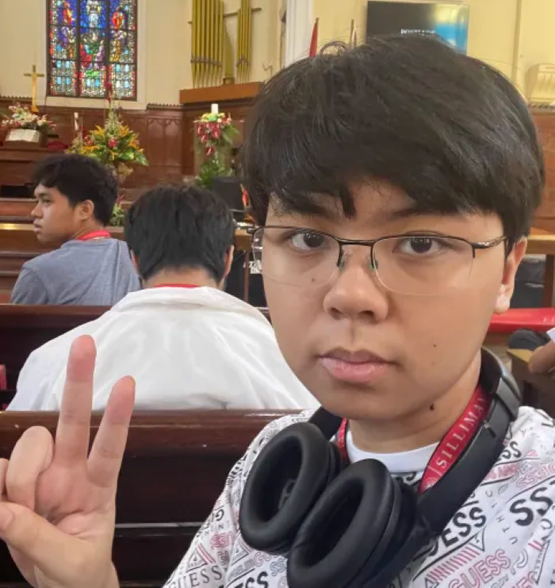

Role: Participant
The CCS Opening Devotion was held on August 19, 2024 from 7:30-9:00 AM, organized by the SU Church to open the week for Silliman’s College of Computer Studies. As a Computer Science student, I along with the rest of my department were encouraged to take part in and spectate this event. The event gathered all the students in the college for a moment of worship as a community and brought us together both physically and spiritually.
The dean of our college, Asst. Prof. Joy Dy performed the opening remarks and greetings for the mass, after which we all participated in various worship songs. The message of the service was that all things are done through the power of God, who can do all things, but although His power is immense, He will not always help us in what we ask for or give us what we want. However, in the end, it is crucial to remember that He always does what is best for us in the long run. The scripture reading was from Ephesians 3:20-21, delivered by Rev. Iris H. Tibus. The whole college being there was a pleasant surprise and a great experience, as I felt closer with everyone there during the service as we all worshiped in unison.
After the service, I realized the value in persevering even when it seems like nothing is going right, and I realized that faith plays a powerful role in doing that. I gained a new perspective on my studies, as the lessons I learned during the mass very much applied to them. I hope to one day utilize these life lessons in my future endeavors. I will continue to do my best and have faith in God throughout my studies.
Because of this activity, I am of the belief that I can excel in my studies and throughout my life just as long as I remember to have faith and to remember my values.

×